Terrain de Jeu
Cache-cache, chasse au trésor et loup‑garou entre amis, avec ton téléphone dans la poche.
Sur ordinateur ?
Scanne ce code avec ton téléphone pour ouvrir cette page et installer le jeu.
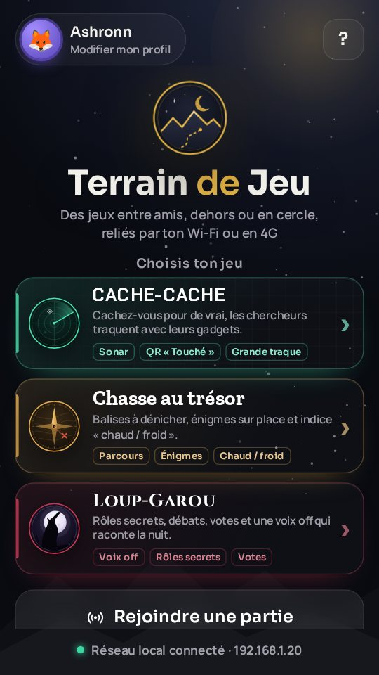
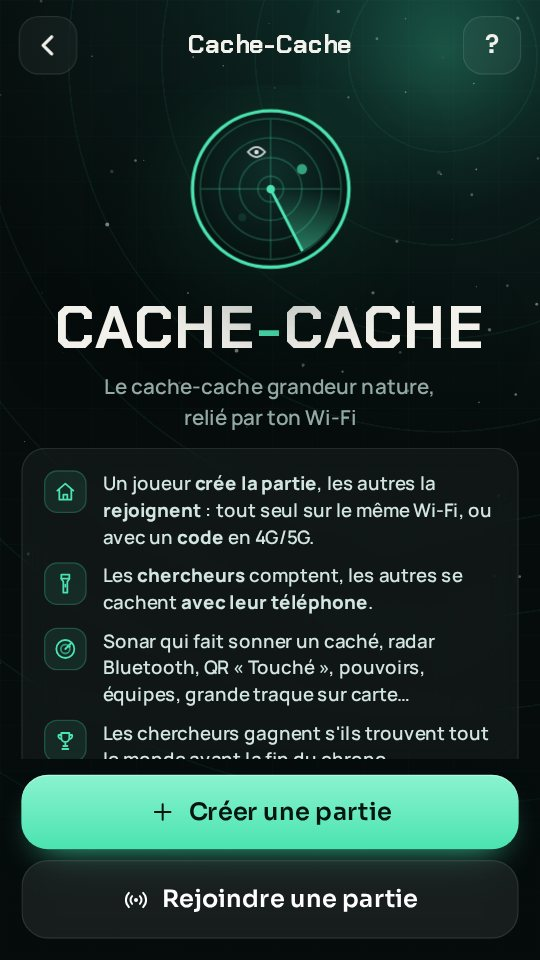
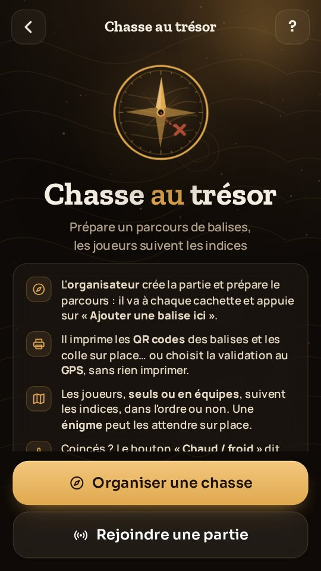
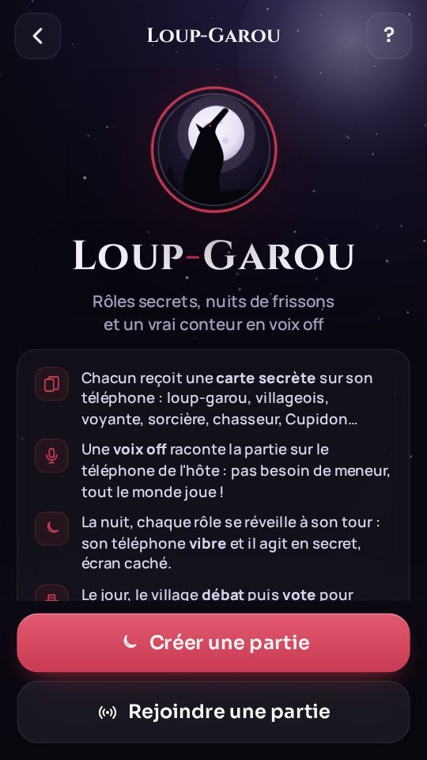
Cache-Cache
Le vrai cache-cache, avec des gadgets
On crée la partie
Un joueur ouvre un salon. Sur le même Wi-Fi, il apparaît tout seul chez les autres. En 4G/5G, on partage un code à 6 caractères.
Les chercheurs comptent
Les autres partent se cacher pour de vrai, téléphone en poche. Le compte à rebours est le même pour tout le monde.
La chasse commence
Sonar, radar, QR code… Les chercheurs ont jusqu'à la fin du chrono pour trouver tout le monde.
Le sonar
Le chercheur fait sonner le téléphone d'un caché, au volume du téléphone, même en mode silencieux. Il n'y a plus qu'à suivre le bruit.
QR « Touché »
Chaque caché a son QR code. Le chercheur le scanne pour valider : fini les disputes.
Radar Bluetooth
Brûlant, chaud, tiède ou froid : le radar sent les cachés jusqu'à une trentaine de mètres.
Pouvoirs des cachés
Leurre qui fait sonner un autre téléphone, bouclier anti-sonar, brouilleur de radar.
Des modes de jeu
Contagion, Délivrance, Sardines, équipes au choix ou tirées au sort, zone GPS qui rétrécit.
Grande traque
Un fugitif se cache dans toute la ville (de 2 à 50 km). Les chercheurs posent des questions : « Es-tu à moins de 2 km ? », « Dans quelle direction ? », « Je chauffe ? ». Le GPS répond tout seul et la carte grise les zones éliminées.
Wi-Fi ou 4G/5G
Sur le même réseau ou à distance avec un code, et même les deux dans la même partie. Les échanges sont chiffrés.
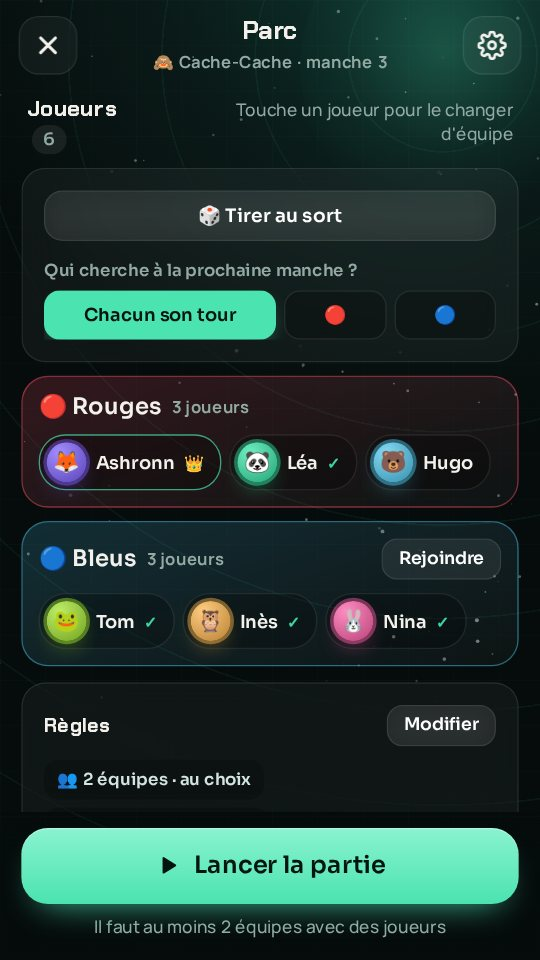
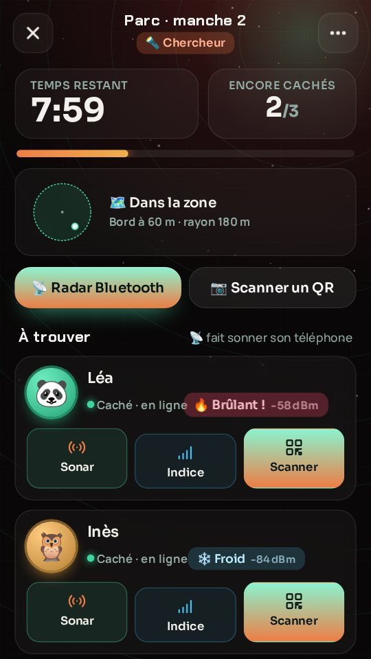
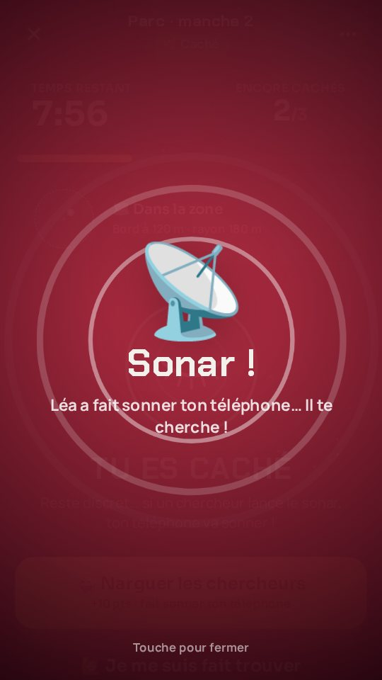
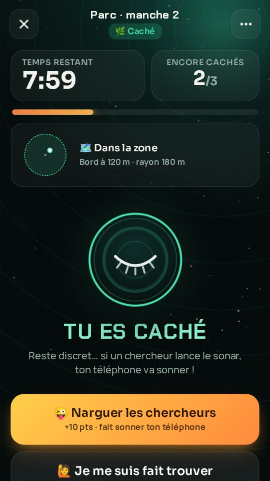
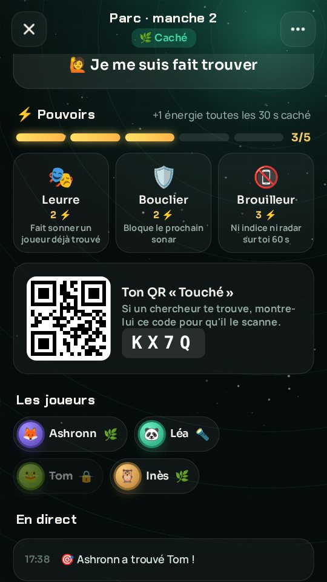
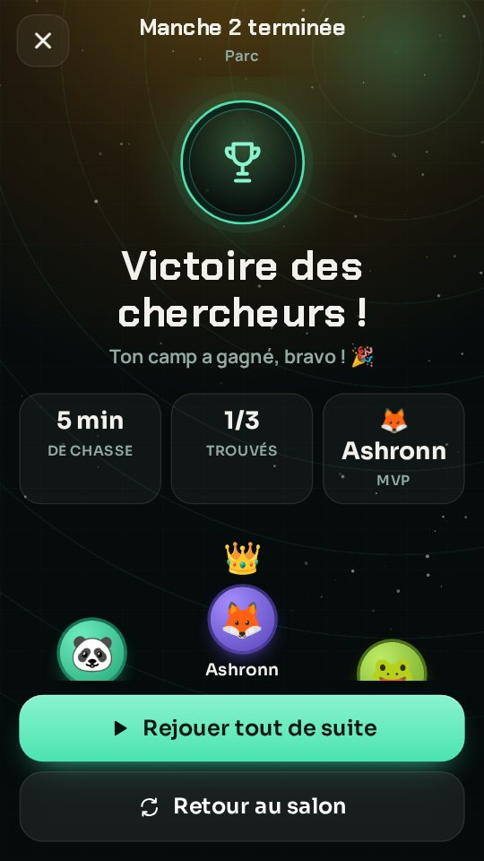
Chasse au trésor
Une chasse au trésor, préparée en 5 minutes
On pose les balises
L'organisateur marche jusqu'à chaque cachette et appuie sur « Ajouter une balise ici » : position GPS, indice, énigme si on veut.
On imprime les QR codes
6 balises par page, à coller sur place. Ou validation au GPS : rien à imprimer du tout.
Les équipes courent
Chaque balise trouvée donne l'indice de la suivante. La première équipe qui trouve tout gagne !
Un vrai parcours
Dans l'ordre (chaque balise débloque l'indice suivant) ou en ordre libre, seul ou en équipes. L'organisateur suit tout en direct : qui a trouvé quoi, qui sèche sur une énigme.
Énigmes sur place
« Combien de lions sur la fontaine ? » Il faut la bonne réponse pour valider la balise.
Chaud ou froid
Coincés ? Un bouton dit si la balise est brûlante, tiède ou glacée.
QR ou GPS
On scanne le QR collé sur place, ou on appuie sur « Je suis arrivé » quand le GPS est tout près.
Rien ne fuite
Positions, codes et réponses restent sur le téléphone de l'organisateur. Le parcours est gardé pour la prochaine fois.
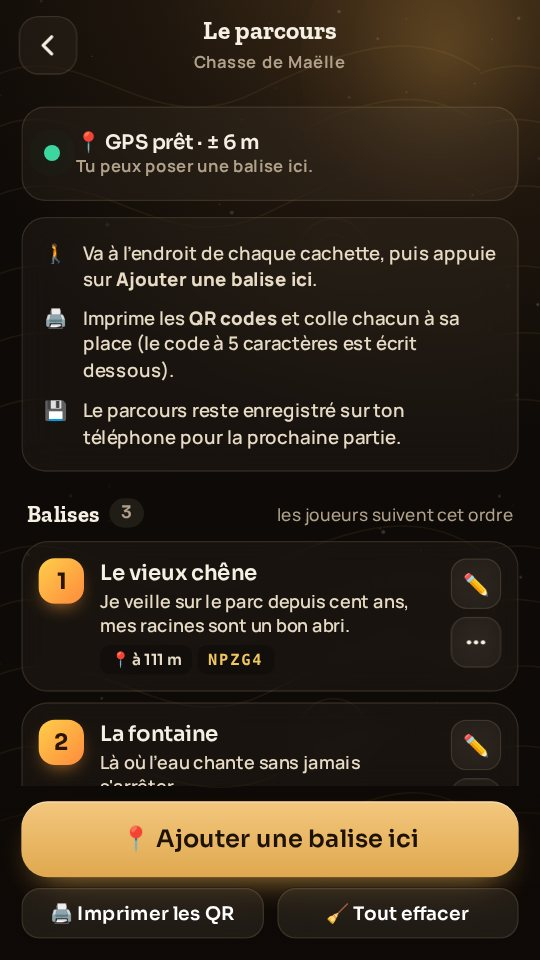
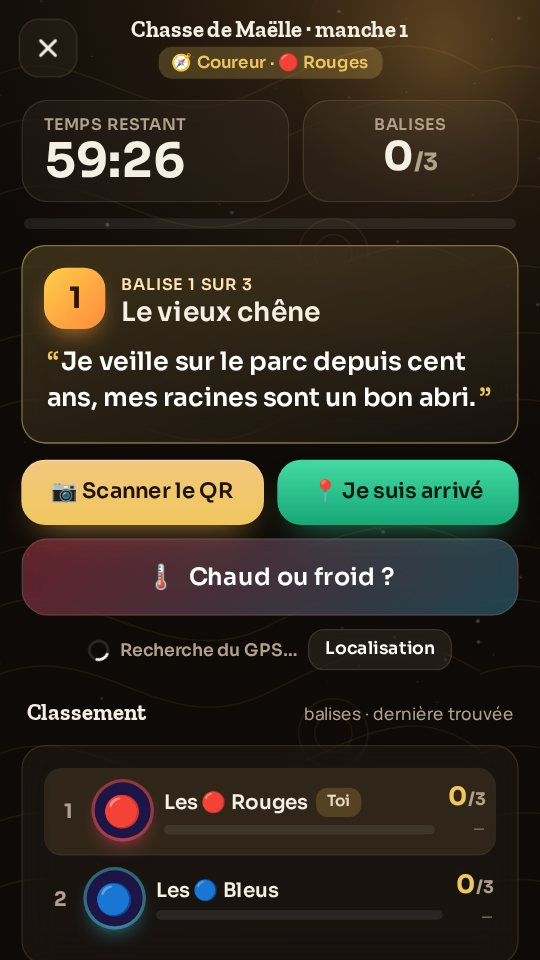
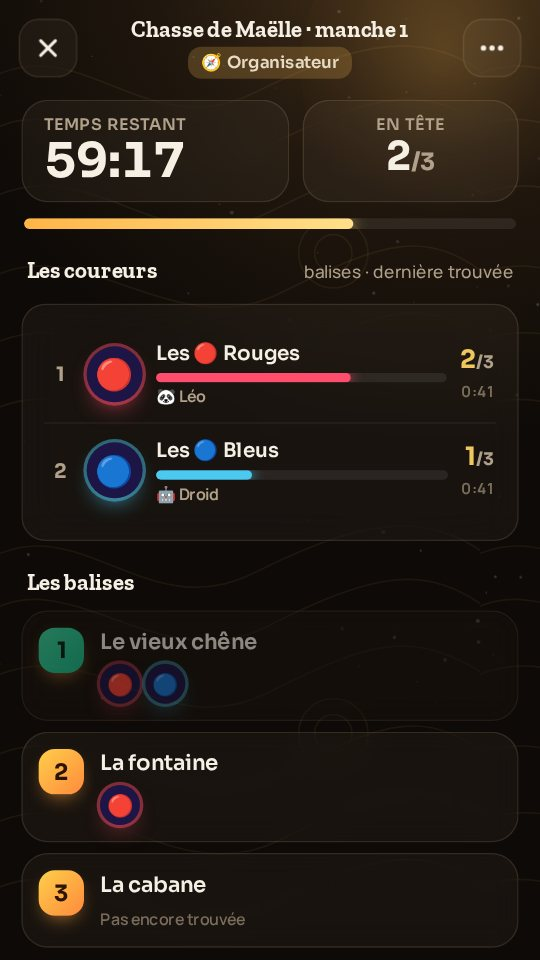
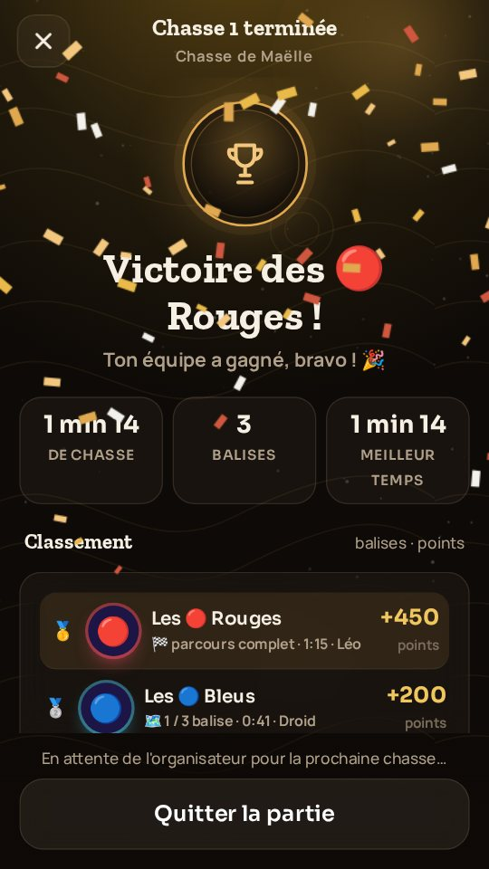
Loup-Garou
Le Loup-Garou, raconté par une vraie voix
Chacun sa carte
Asseyez-vous en cercle. Chaque téléphone reçoit une carte secrète : loup-garou, villageois, voyante, sorcière…
La nuit tombe
Le conteur appelle les rôles un par un. Ton téléphone vibre quand c'est ton tour : tu agis en secret, écran caché.
Le village vote
Au matin, on découvre les victimes, on débat, puis on vote pour éliminer un suspect. Les loups seront-ils démasqués ?
Une voix off, pas de meneur
Le téléphone de l'hôte raconte toute la partie, avec ambiance de nuit, hurlements et cloche du matin : tout le monde peut jouer. Une conteuse ou un conteur, au choix.
8 rôles
Loups-garous, villageois, voyante, sorcière, chasseur, Cupidon et ses amoureux, salvateur, idiot du village.
Rien ne se devine
La nuit, tout le monde touche son écran pour noter ses soupçons : impossible de savoir qui agit vraiment.
Votes en direct
Chacun vote sur son téléphone, les voix s'affichent en direct. Égalité ? Second tour.
Ou un conteur humain
L'hôte peut aussi mener la partie : il voit tous les rôles et les choix de la nuit.
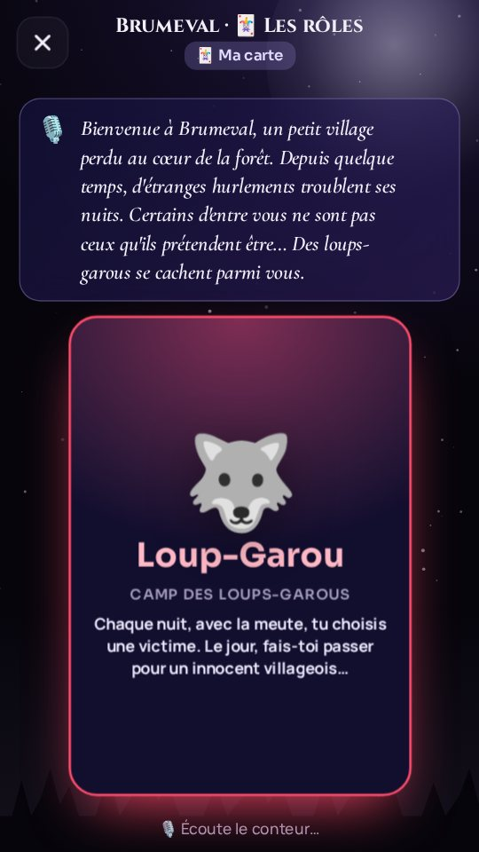
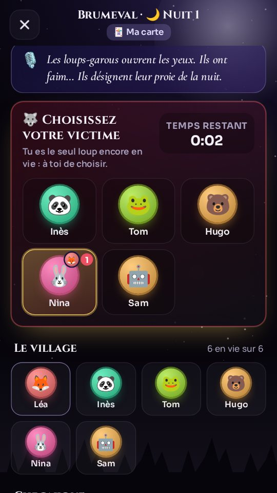
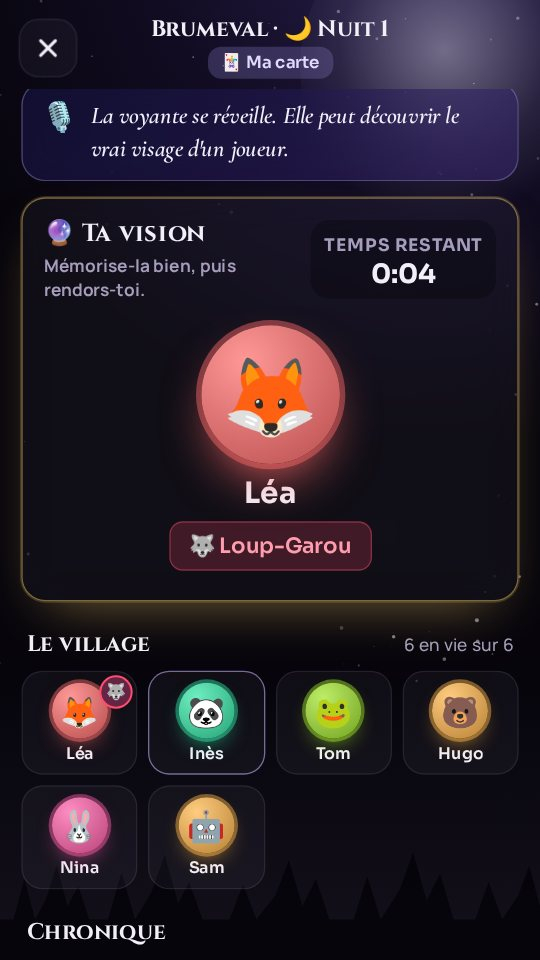
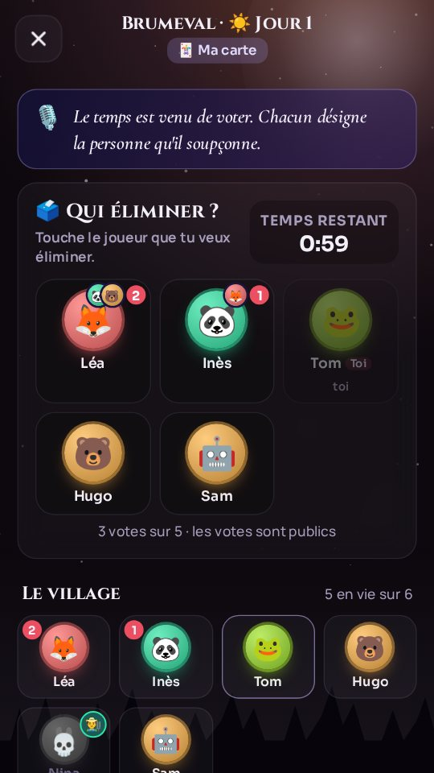
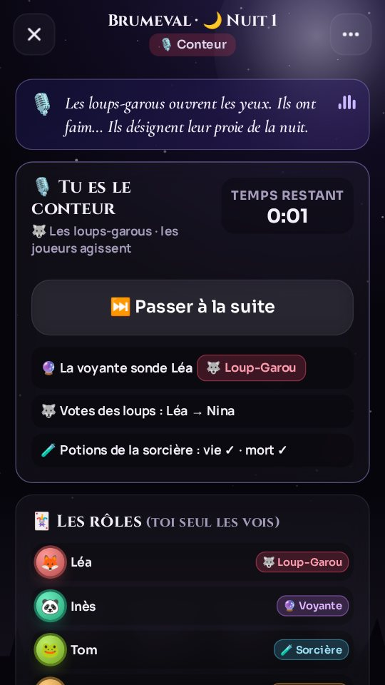
Installation
Installer Terrain de Jeu
- Télécharge le fichier avec le bouton ci-dessous, depuis ton téléphone Android.
- Ouvre-le (notification « Téléchargement terminé » ou dossier Téléchargements).
- Si Android le demande, autorise ton navigateur à installer des applis, puis reviens en arrière.
- Si Google Play Protect affiche un avertissement, touche « Plus de détails » puis « Installer quand même » : c'est normal pour une appli qui ne passe pas par le Play Store.
- C'est installé. Ensuite, l'appli se met à jour toute seule : elle télécharge la nouvelle version et te propose de l'installer.
Android 6 ou plus récent. Pour jouer à plusieurs, tout le monde installe l'appli : Android et iPhone peuvent jouer dans la même partie.
Sur iPhone, Terrain de Jeu s'installe avec AltStore, un magasin d'applis gratuit qui le garde aussi à jour. Il faut un ordinateur Windows ou Mac une seule fois, pour installer AltStore sur l'iPhone.
Installe AltStore
💻 Sur l'ordinateur · une seule fois · 10 minutes
Tu es sur ton iPhone ? Cette étape se fait sur un ordinateur : envoie-toi le lien de cette page.
- Installe iTunes et iCloud depuis le site d'Apple, pas ceux du Microsoft Store :
⬇️ iTunes⬇️ iCloud - Télécharge AltServer, dézippe le fichier et lance
Setup.exe.
AltServer pour Windowsofficiel (altstore.io) · gratuit - Tape AltServer dans la recherche Windows, fais un clic droit › Exécuter en tant qu'administrateur et accepte l'accès au réseau. Son icône en forme de losange apparaît près de l'horloge (flèche ^ si elle est cachée).
- Branche l'iPhone en USB, déverrouille-le et touche Faire confiance. Dans iTunes, sur la page de l'iPhone, coche l'option de synchronisation en Wi-Fi.
- Clique sur l'icône AltServer › Install AltStore › ton iPhone, puis saisis ton identifiant Apple.
- Télécharge AltServer (macOS 11 ou plus récent), dézippe-le, glisse AltServer dans Applications et ouvre-le : son icône apparaît dans la barre des menus.
AltServer pour Macofficiel (altstore.io) · gratuit - Branche l'iPhone, déverrouille-le et touche Faire confiance. Dans le Finder, clique sur l'iPhone et coche l'option qui l'affiche en Wi-Fi.
- Clique sur l'icône AltServer › Install AltStore › ton iPhone, puis saisis ton identifiant Apple.
Puis sur l'iPhone :
- Réglages › Général › VPN et gestion de l'appareil › ton identifiant Apple › Faire confiance.
- Réglages › Confidentialité et sécurité › Mode développeur › active-le, puis laisse l'iPhone redémarrer.
🔒 Ton identifiant Apple sert uniquement à Apple pour signer l'appli : il n'est envoyé ni à Terrain de Jeu ni à AltStore. AltStore n'apparaît pas sur l'écran d'accueil ? Redémarre l'iPhone.
Installe Terrain de Jeu
📱 Sur l'iPhone · 1 minute
Une fois AltStore installé, touche ce bouton : AltStore s'ouvre sur la source Terrain de Jeu. Ajoute-la, puis touche FREE à côté de Terrain de Jeu.
Ouvrir dans AltStoresource Terrain de JeuTu es sur l'ordinateur ?
Scanne ce code avec l'appareil photo de l'iPhone : cette étape s'ouvre directement, avec le bouton.
Le bouton ne marche pas ? Dans AltStore › Sources › +, colle cette adresse :
https://raw.githubusercontent.com/LaZiiZaa/cache-cache-releases/main/altstore.jsonEnsuite, c'est automatique
🔄 Mises à jour et renouvellement
- Nouvelles versions : l'appli te prévient, et AltStore l'installe (onglet My Apps).
- Tous les 7 jours, Apple demande de renouveler les applis installées avec un identifiant gratuit. AltStore le fait tout seul quand l'iPhone et l'ordinateur (AltServer ouvert) sont sur le même Wi-Fi. Tes stats sont gardées.
- Sans ordinateur : sur iOS 17.4 ou plus récent, dans AltStore › Settings › Set up Remote AltServer…, le renouvellement se fait depuis n'importe quel Wi-Fi.
⚠️ Sur altstore.io tu verras aussi AltStore PAL, qui s'installe sans ordinateur en Europe : il n'accepte que les applis validées par Apple, donc pas Terrain de Jeu. Prends bien AltStore Classic avec les liens ci-dessus. Avec un identifiant Apple gratuit, 3 applis au plus s'installent de cette façon (AltStore compris).
Autre solution : Sideloadly (sans AltStore)
- Sur l'ordinateur, installe Sideloadly (sur Windows, avec iTunes et iCloud d'Apple, comme ci-dessus).
- Télécharge le fichier iPhone ci-dessous, branche l'iPhone et glisse le fichier dans Sideloadly › Start.
- Sur l'iPhone, fais confiance à ton identifiant Apple et active le mode développeur (comme à l'étape 1).
Sans AltStore, rien ne se renouvelle tout seul : il faut réinstaller l'appli tous les 7 jours (tes stats sont gardées).
Questions
Questions fréquentes
C'est vraiment gratuit ?
Oui : pas de pub, pas d'achat dans l'appli, pas de compte à créer.
Faut-il Internet pour jouer ?
Non. Sur le même Wi-Fi (ou le partage de connexion d'un téléphone), tout se passe en local. Internet sert seulement aux parties à distance en 4G/5G, avec le code de la partie.
Pourquoi l'appli n'est pas sur le Play Store ou l'App Store ?
Elle est distribuée directement ici, gratuitement. Sur Android, l'installation d'un fichier APK est prévue par le système. Sur iPhone, Apple impose AltStore ou Sideloadly pour les applis hors App Store.
Mon identifiant Apple est-il en sécurité avec AltStore ?
AltServer l'utilise pour demander à Apple de signer les applis que tu installes : il est envoyé uniquement à Apple, jamais à Terrain de Jeu ni à l'équipe d'AltStore. Si tu préfères, tu peux utiliser un identifiant Apple secondaire, gratuit.
Combien de joueurs ?
De 2 à 50 joueurs par partie, en solo ou en 2 à 4 équipes. Pour le Loup-Garou, il faut au moins 4 joueurs (idéalement de 6 à 12).
Et mes données ?
Aucune donnée personnelle n'est collectée : ton pseudo et tes stats restent sur ton téléphone. Les parties par Internet sont chiffrées de bout en bout. Détails dans la politique de confidentialité.
Comment avoir les nouvelles versions ?
L'appli vérifie toute seule s'il existe une nouvelle version. Sur Android, elle la télécharge et te propose de l'installer. Sur iPhone, elle t'affiche une alerte et AltStore installe la nouvelle version (onglet My Apps).